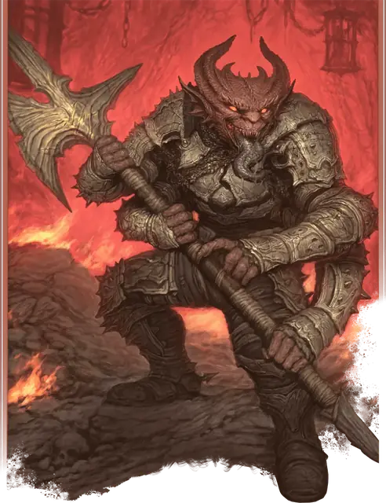

Дьявол-златоуст (логокрон)
Speaker Devil
Большое Исчадие (Дьявол), Принципиальное Злое

Класс Защиты 17 Инициатива +4 (14)
Хиты 189 (18к10 + 90)
Скорость 30 футов, Полёта 30 футов
| мод | спас | ||
|---|---|---|---|
| СИЛ | 21 | +5 | +5 |
| ЛОВ | 19 | +4 | +4 |
| ТЕЛ | 20 | +5 | +9 |
| мод | спас | ||
|---|---|---|---|
| ИНТ | 22 | +6 | +10 |
| МДР | 18 | +4 | +8 |
| ХАР | 17 | +3 | +7 |
Сопротивление урону Холод
Иммунитеты Огонь, Яд; Отравленный
Чувства Тёмное зрение 120 футов (игнорирует магическую Темноту), пассивное Восприятие 18
Языки Инфернальный, Телепатия 120 фт.
Опасность 12 (8 400 опыта; БВ +4)
Особенности
Восстановление дьявола. Когда дьявол умирает за пределами Девяти Преисподних, его тело превращается в сернистое облако и в тот же миг заново возрождается со всеми Хитами где-то в Девяти Преисподних.
Сопротивление магии. Дьявол совершает с Преимуществом спасброски от заклинаний и прочих магических эффектов.
Действия
Мультиатака. Дьявол совершает две атаки Громовой алебардой.
Громовая алебарда. Бросок рукопашной атаки: +9, досягаемость 10 фт. Попадание: 16 (2к10 + 5) Рубящего урона плюс 14 (4к6) урона Звуком.
Сотворение заклинаний. Дьявол-златоуст сотворяет одно из следующих заклинаний, не нуждаясь в Материальных компонентах (заклинательная характеристика — Интеллект, Сл спасброска заклинаний 18):
Неограниченно: Обнаружение магии, Обнаружение мыслей
2/день каждое: Изменение памяти, Переносящая дверь
Бонусные действия
Изречение боли. Спасбросок Мудрости: Сл 18, каждое существо в 20-футовой Эманации, исходящей от дьявола. Провал: Цель получает состояние Ошеломлённый до конца следующего хода дьявола.
Изречение распада. Спасбросок Телосложения: Сл 18, каждое существо в 20-футовой Эманации, исходящей от дьявола. Провал: 22 (4к10) Силового урона. Успех: Только половина урона.
Бонус мастерства +4
Среда обитания Город, Девять преисподних
Сокровища Оружейные
Дьявол-златоуст
Дьявол словесного принуждения
Дьяволы-златоусты — громадные четырёхрукие Исчадия, которые выведывают тайны существ, а затем принуждают их к злодеяниям. Несмотря на свои непомерно большие языки, златоусты говорят ясными и приятными голосами. В иерархии Девяти Преисподних их называют логокронами.
Многие дьяволы-златоусты верны архидьяволу Мефистофелю. Они записывают добытые секреты в Мефистаре — огромной библиотеке Мефистофеля в Кании. Жадно выведывая чужие тайны, свои собственные секреты златоусты тщательно вымарывают, дабы никто не использовал эти знания против них самих.